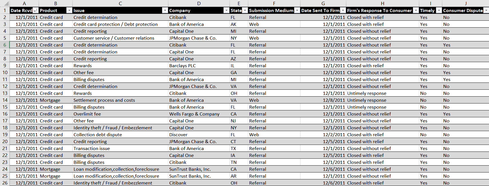
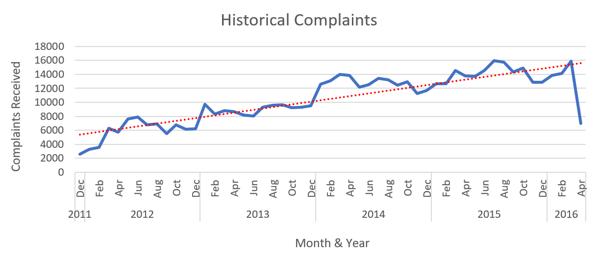
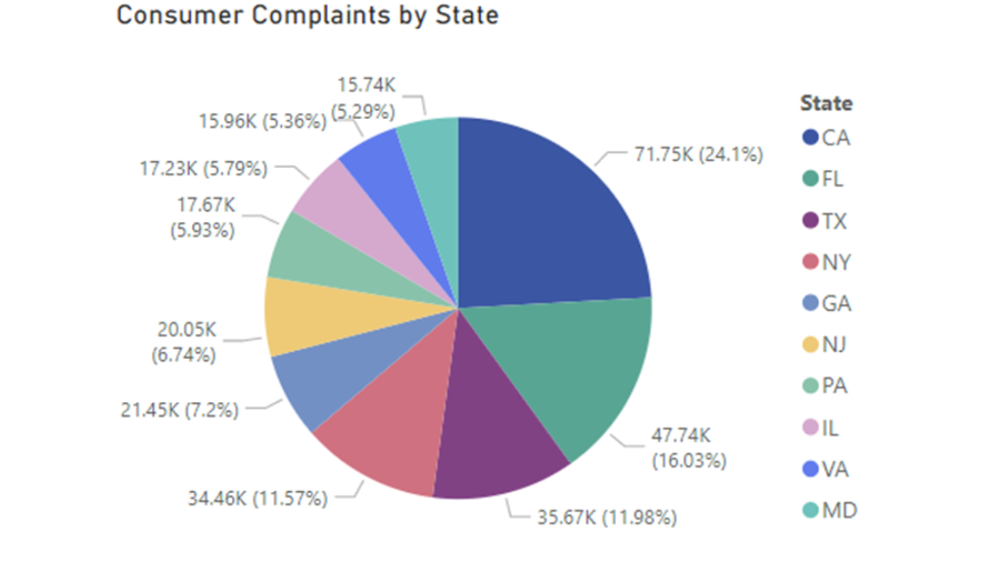

Statistical Analysis of Customer Experience in Consumer Finance
Analyzing the Financial Industry to Improve Consumer Experience
The Consumer Financial Protection Bureau collects data on complaints that consumers report against American financial institutions across various products and services. I wrote a Python program to scrape this dataset for all complaints between 2011 and 2016, and this post aims to determine the most effective ways to reduce complaints in the Consumer Finance industry.
Starting with the raw data, the CFPB adds several fields that need to be cleaned off for our analysis, such as complaint ID number, bank ID, call center, etc. After cleaning, the dataset has the following 11 dimensions and I imported the dataset into an Excel table:
In the end, the dataset had a sample size of 550,000+ complaints from 3,600+ Financial Firms across all 50 states.
Macroscopic Analysis of the Data
First I identified historical trends in the data, starting with plotting the volume of complaints received by month. At the same time, I also plotted the total volume of complaints received for each calendar month for all years in the dataset.

From the Historical Complaint chart we see that the Consumer Finance industry has seen steadily increasing complaint volume as time has passed. The drop at the right of the historical graph can be dismissed, as it results from the data collection being incomplete for March and April 2016. The Least Squares Regression line is a very strong fit, and suggests that complaint volume will, on average, continue to increase in the following year.
We now want to determine the business cycle for Consumer Finance. For this we compare the complaint volume by month for one calendar year in the dataset. In the Consumer Complaints by Month chart we see that, across all years, Q1 saw a significantly increased influx of demand which slightly spilled over to Q2, and after which work demand stabilized. This trend also held for all individual calendar years in the dataset. The business cycle then consists of 3 periods, the expansion period occuring in Q1 followed by the cooling period in Q2 and the flattening period in Q3 and Q4.
From these two findings we can create our first actionable insight: Financial firms should expect to see more demand on average than last year, with the largest demand occuring in Q1. Based on this we can recommend either an increase in resource allocation devoted to addressing the complaints or increased efficiency in how firms resolve disputes with their products/services. After Q2, the firm can steadily scale back resources allocated to addressing complaints.
Microscopic Analysis
We now have identified overall trends in the data and have a better picture of the industry. We now want to check for data clustering to see if theres any particular grouping of the data where complaints are concentrated. First I plotted the distribution of complaint reports by firm for all years aggregated in the dataset. If we expect that firms are all performing to similar customer satisfaction, we expect an approximately uniform distribution. The data however says otherwise:

We see that Bank of America contributes disproportionately to the total complaint volume, receiving over 25% more complaints than second place Wells Fargo. Further analysis of the data revealed that the top 5 worst performing banks were the same for each year, and this included Bank of America, Wells Fargo, and JP Morgan. Seeing that Bank of America has strong representation in the dataset, I hypothesized that the products that Bank of America received the most complaints about should be similar to the most complained about products in the overall dataset. Surprisingly, this wasn't the case:


The overall industry struggled the most in Loan Modifications, Incorrect Credit Reporting, and Loan Payments. However, Bank of America had no weakness in these categories, instead struggling with Bankruptcy Services, Billing Disputes, and Account Deliquencies.
Remarkably, none of the lowest performing products/services of the 5 most represented firms in the dataset matched the lowest areas of the overall dataset. As an example, Wells Fargo's lowest ratings were from Deposit/Withdrawal Service Issues and JPM struggled most in Service Fee disputes, yet the dataset indicates Loan Servicing as the most prevalent failure in the industry. Even when comparing the firms against each other I found that there was no strong correlation between complaint volume and complaint category. There was no failing product/service that these high representation firms had in common. From this we can say that firms must take a personalized approach in their business developments to improve and that the Consumer Finance industry is unlikely to improve by imposing blanket policies.
Analysis of Consumer Reporting
Finally, we'll look at the reporting characteristics of the dataset. I started by tabulating the complaint volume by state as well as by reporting method. My hypothesis for segregating by state was that the complaint volume may be proportional to the states population. From this I expected California and Texas to top the list. I segregated by reporting method to get more information on the sampling of the population, as well as to use the results to determine the most efficient way to standardize future data collection.

We can see that the state chart does suggest that complaint volume is proportional to state population as opposed to geographic location. We can also see that the majority of reporting was received through internet-based methods such as Email and Web forms.
Given these results we can suggest increasing resource allocations to high population states in proportion to that states population. We can also suggest streamlining online complaint processing methods due to it being the preferred reporting avenue. For data integrity, we'd suggest the standardization of a web form across all institutions regarding filing a complaint.
Conclusion
Let's first recap everything we found out about the Consumer Finance industry. Below are the main results we gathered from our descriptive analysis:
- Complaints for the Year 2017 are likely to steadily increase industry wide
- The business cycle consists of three phases, with expansion and peak work demand occuring in Q1
- Strong correlation exists between state populations and complaint volume received
- Bank of America, Wells Fargo, and JP Morgan consistently had among the most complaints of all firms
From this information we can suggest the following policies:
- Firms should increase resources allocated to addressing consumer complaints in 2017
- Increases in spending toward customer experience should be proportional to the population that the firm serves
- Each firm must self-audit to determine their own particular weaknesses
- State and Federal policies aimed at addressing Consumer complaints are unlikely to effectively improve customer experience
- Internet based methods of reporting complaints should be standardized across all firms to reach the most consumers
To end this post, I leave an MS Power BI dashboard that incorporates the diagrams used above along with appropriate data slicers.

- Technologies Used:
- Python
- Pandas
- MS Excel
- MS Power BI